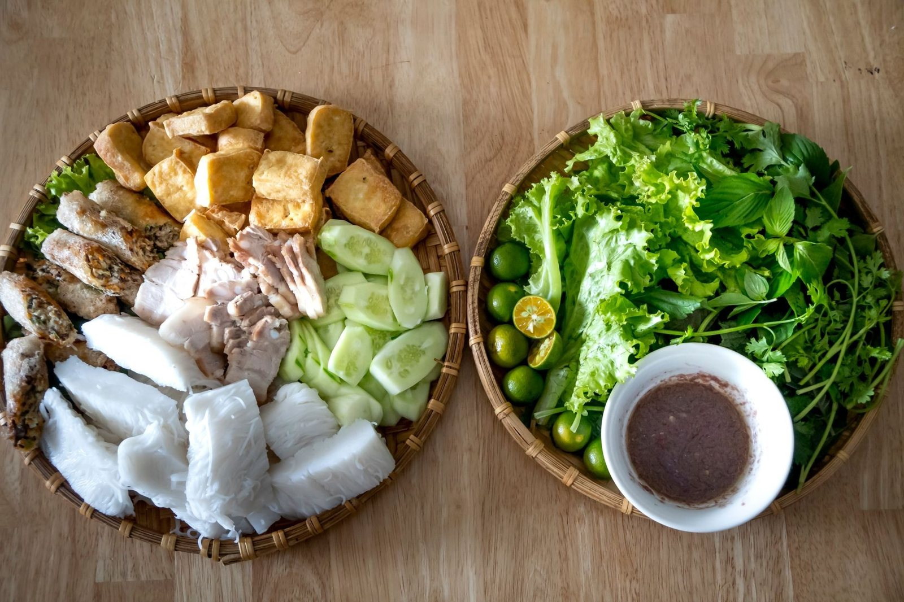
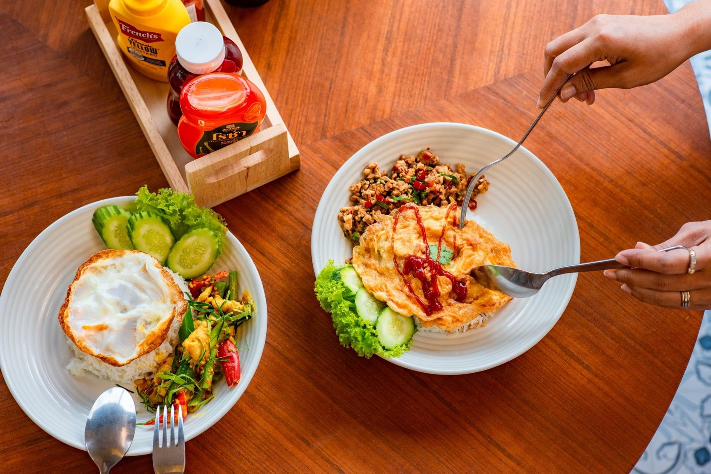

Gotujemy tak, jak w domu - świeże zioła, aromatyczne buliony i przyprawy prosto z Azji. Pho, sajgonki, Pad Thai i curry.

Xin Chào Restaurants to miejsce, w którym kuchnia Wietnamu i Tajlandii spotyka się przy jednym stole. Stawiamy na świeże zioła, aromatyczne buliony i przyprawy, które nadają naszym daniom prawdziwy, azjatycki charakter.
Zjesz u nas na miejscu w ciepłym, klimatycznym wnętrzu, weźmiesz danie na wynos albo zamówisz z dowozem pod swój adres. Zapraszamy na obiad, kolację albo po prostu na miskę dobrego pho.
Wpadnij na miskę pho albo aromatyczne curry - gotujemy na świeżo każdego dnia.